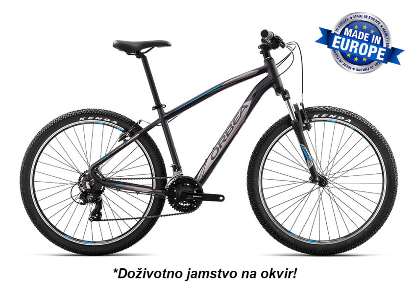

Sean Sweeney opened the door to the refurbished 1839 barn behind his home in Wayne, Pa., outside of Philadelphia. Inside, one bicycle after another hung from hooks screwed into a beefy ceiling beam: Mr. Sweeney’s triathlon bike, road bike and two mountain bikes dangled alongside four bikes belonging to his wife and one of his three daughters. Mr. Sweeney races often, and the whole family competes in triathlons. The 59-year-old Mr. Sweeney, a strategic adviser for the Tokio Marine insurance companies, always hated hauling the bikes to a local shop to be tuned up and repaired. “I have to carry that big thing right there,” he said, gesturing toward a bicycle rack for his car. “I have to load it; it smacks my legs. My wife and kids, they all hate doing it, and we all put it off.” On this day, however, Mr. Sweeney only had to point to the bike he wanted repaired — a Trek hardtail mountain bike with a few mysterious squeaks after a recent race — and the work was underway. Seth Samson, a bicycle mechanic for a company called Velofix, rolled the bike into a large red van parked in Mr. Sweeney’s driveway, clipped it to a stand and started taking it apart.
Orbea has previously sponsored and supplied bikes to teams, including the now-defunct Euskaltel-Euskadi professional team in the Basque area of Spain and the Herring Gas team in the USA. Samuel Sánchez rode an Orbea Orca Carbon to win the road race at the Beijing Olympics and Julien Absalon won the mountain bike gold on an Orbea Alma. Craig Alexander, three time Ironman World Triathlon Champion (2008, 2009, 2011), rode an Orbea Ordu in his first 2 wins and although he had planned to spend the rest of his career racing on Orbea bicycles, having signed a lifetime contract with Orbea in 2010, he switched to another brand for the 2011 race.